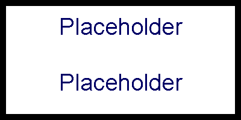

Keyring
Productname comes with a keyring already paired with the unit. It’s simple in design and it’s job is to alert the user if any significant vibration has been detected. When the Keyring Device is within 2 meters of the unit, the unit will remain in standby as to not issue any false alarms whenever you’re riding your bike. It contains a coin-size battery, receiver, notification light and a reset button. The light uses three different colours to warn the owner of their severity of the vibration detected. After the notification light is lit, you may turn off the light by pressing the reset button.
- A light yellow color indicates caution and that something has happened to the bike in such a way that the user might be advised to have a look, but that most likely nothing has happened.
- An orange light indicates that something has likely happened and it is advised that you visually check on your bike.
- A red light indicates an immediate warning that major movement has occurred and it’s highly advised that you visually check your bike or that you track it through the website or app.

Unit registration
When purchased the unit comes with a unique serial number, you use your serial number to register your account. This makes sure that you’re the only one able to track your bike through either the app or website, all you have to do is to log into your account. You’re not required to use your real name or any phone number while registering the unit, this way your account is anonymous and we guarantee that none of the tracking data from productname is accessible to us without your direct consent.